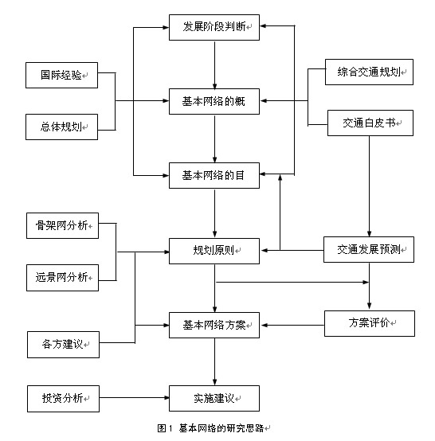
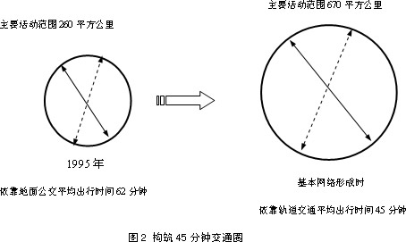
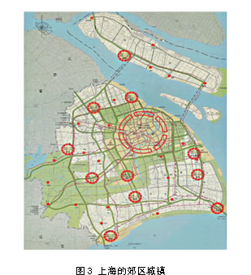
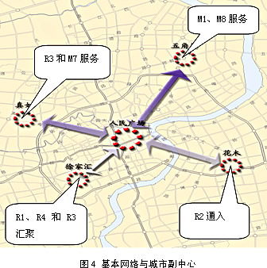
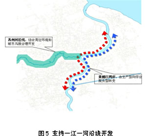
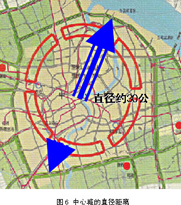
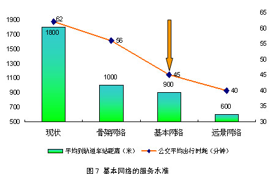
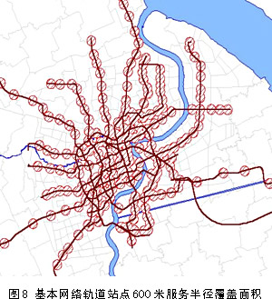

上海市轨道交通基本网络发展研究 ( 2007年11月20日 )
【摘要】<BR> 为了构筑国际化大都市现代化交通体系，上海从上世纪九十年代开始大力发展轨道交通，以促进经济社会发展，改善投资环境，提高市民生活质量，缓解交通拥挤。经过10年左右的建设，目前本市已经建成并投入运营的轨道线路共有5条，形成了总长123公里左右的初始线路，日均承担客运量170万乘次，约占公交客运总量的18%，初步显示了轨道交通快速和大运量的优势。<BR> 上海中心城交通正面临巨大的压力，交通拥堵已经成为城市主要的“顽症”之一。而汽车大量上路所引发的其他诸如废气污染、噪音污染等环境问题也日益损害着上海这座大都市的“容貌”。为此，大力发展轨道交通改变原有地面公交服务系统的计划也作为上海提升城市综合形象和功能的举措之一。<BR> 2010年上海将举办一届规模很大的世博会，预计吸引近7000多万人次的参观客流，城市交通设施也将承受巨大的压力。为了应对2010年巨大的世博会游客压力，展现“城市，让生活更美好”的主题，上海市也充分认识到加快轨道交通建设的必要性和紧迫性。<BR>在以上背景下上海市开展了近期基本轨道网络发展研究，并已经开始了庞大的建设施工，预计到2010年将形成400公里左右的轨道基本网络。</P>
一、研究背景</FONT>
根据《上海市城市总体规划（1999-2020）》，在整个市域范围内，远景轨道网络总长将达到780公里。这是一个长期发展的目标，大约需要20-30年的时间才能完成所有的规划线路。上海现有五条轨道交通线路投入运营，总长达到123公里，已经在城市交通中发挥了重要作用。<BR> 在轨道交通的形成过程中，要根据轻重缓急，在较短的时间内，形成功能较完善，适应世界级城市发展要求的轨道交通基本网络，尽快发挥轨道网络的整体效益，同时也要应对2010年世博会期间的交通运输压力。<BR> 为此，市政府要求研究轨道交通基本网络，以指导近期轨道建设中的各项工作。根据市领导的部署，市规划局组织城市综合交通规划研究所和城市规划设计研究院等单位，成立专题研究小组，开展研究基本网络。课题组结合国内外城市的发展经验，对基本网络的相关问题进行了充分论证，并在多方案比选的基础上，形成了基本网络方案和专题研究成果。在研究过程中，编织单位还通过研讨会等多种形式，充分听取和吸纳了交通局、申通公司、地铁运营公司、地铁建设公司和高校以及原网络设计单位法国SYSTRA公司等方面的院士、教授、资深专家和领导的意见，使规划方案和研究成果日臻完善。</P>
二、研究思路  
依据《上海市城市总体规划（1999-2020）》和《上海市城市交通白皮书》，借鉴国际经验，判断轨道交通发展的阶段，确定基本网络的概念和规划原则。<BR> 参照国际同类城市，分析骨架网络和远景网络各自发挥的交通作用，依据《上海市综合交通规划（2000-2020）》预测近远期交通发展的趋势，确定基本网络的目标。<BR> 在规划原则和目标的指导下，采用科学的评价方法，分析基本网络的规模和功能，以骨架网络为基础，远景网络为依据，在综合各方意见的基础上形成基本网络方案，并通过投资可能分析，提出基本网络的实施建议。<BR>
三、轨道基本网络的目标
1. 上海轨道交通网络发展阶段的判断
通过对若干国外城市的相关资料分析，可以找到轨道网络在形成过程中的普遍规律，即大多数城市轨道交通的发展都经历了四个阶段，分别为初始发展期、集中发展期、稳步发展期和成熟发展期。如伦敦是西方轨道发达城市的代表。地铁网络总长420公里左右，1863-1899年（初始发展期）每年建设3公里，持续了36年才建成113公里的轨道网络。1900-1918（集中发展期）发展速度明显加快，每年集中建设6公里，仅经历了18年就使轨道网络规模扩大到了230公里。1919-1949（稳步发展期），发展速度略有放慢，每年建设4.5公里，经历了30年才使轨道网络规模扩大到365公里；1950以后进入成熟发展期，轨道网络规模在稳定中缓慢向外拓展，年均增长1公里，到1999年轨道网络仅增长了54公里，地铁总长达到420公里。又如汉城，轨道交通的建设速度曾经一度创下世界之最，同为发展中国家的城市，与上海有较多的相似之处。汉城现有轨道网络总长280.9公里，地铁建设经历了两次跳跃式集中发展时期：1974年-1985年，建成了134.9公里，每年建设12公里；此后在十多年的时间内，轨道建设处于停止状态；1994年-2000年以每年24公里的速度完成了余下4条线路的建设。<BR> 上海的轨道交通建设正处于集中发展期，年均建设40公里的速度不仅远远高于西方城市，而且比汉城的建设速度也要高出近一倍。同西方国家集中建设城市轨道交通时的情形相比，上海目前无论是科技力量还是经济实力都明显增强，再加上还清历史欠账的迫切性，使看似超常规的情况，也变得合乎情理。象上海这样大规模建设轨道的情况，在全世界尚没有先例。集中发展轨道交通最大的优势是可以始终保持一支成熟的专业队伍，高效地投资轨道建设；面临的挑战则是亟需在发展中协调局部与整体、近期与远期等方方面面的关系，保持轨道网络科学和有效地发展。<BR> 2. 基本网络的目标<BR> 上海轨道交通基本网络的目标是构筑中心城45分钟交通圈，确立中心城公共交通的主体地位，明显缓解道路交通压力。<BR>（1）构筑中心城45分钟交通圈
上海目前全市公交方式的出行比重为21%，中心城公交方式比重为28%，与香港、东京和巴黎等城市中心区相比存在较大的差距。从现状的情况来看，市民出行使用最多的交通工具是自行车和助动车，公共交通的吸引力亟需提高。建设基本网络的首要目的是大幅提高公共交通的服务水准，尤其是轨道交通准点、快速和舒适的特点对市民具有极强的吸引力，并带动整个公交系统的复苏，逐步确立中心城公共交通的主体地位。<BR>（3）明显缓解道路交通压力<BR> 虽然上海不断加大道路建设的投资力度，但是随着机动车总量和人们出行活动的增加，道路交通压力始终难以得到根本的缓解。根据历年调查和统计资料，本市中心区地面道路的平均行程车速大约为15公里/小时，拥堵明显。面对小汽车进入家庭的冲击，道路交通将面临更为严峻的挑战，而中心区新建道路的余地却越来越少。因此，吸引地面客流，缓解道路交通压力，也是建设轨道交通的一个主要目的。基本网络形成后，中心城道路交通压力应得到明显的缓解，并将道路运行状况维持在合理的状态，即中心区主要道路的平均行程车速达到20公里/小时以上。</P>
四、轨道基本网络的规划原则   
上海在规划编制轨道基本网络中确立了五个线路走向的基本原则。<BR> 1. 重点解决中心城交通矛盾，满足适时向外拓展的要求<BR>
“十五”计划建成的骨架网络，已经覆盖了中心城一些主要的客运走廊：如轨道1号线经过的漕溪路、淮海路和共和新路沿线；轨道2号线经过的天山路和南京路沿线；轨道8号线经过的中原路、控江路、大连路和西藏路沿线，以及轨道7号线经过的沪太路沿线等。<BR> 而“十五”计划后仍有其它轨道线路继续补充主要客运走廊，如轨道11号线经过的江苏路、华山路沿线；轨道9号线经过的肇家浜路、徐家汇路沿线；轨道10号线经过的四平路、吴淞路和河南路沿线；轨道13号线经过的金沙江路、长寿路沿线等客运走廊亟需疏解交通压力。<BR> 3. 形成一批重要的换乘枢纽，发挥网络效应<BR>
基本网络线路之间相交的枢纽，同步设计同步施工；基本网络线路与远景网络线路相交的枢纽，作出预留，以确保未来实施的可行性。<BR> 4. 服务主要的活动中心，提升服务质量
根据城市总体规划，中心城将形成“多心、敞开式”布局结构，即形成一个市级中心和四个副中心。城市副中心集中了金融、保险、商业、贸易、信息咨询和都市旅游等第三产业，对周边地区具有重要的辐射作用。基本网络将支持四个城市副中心的发展，同时覆盖中心城内其它主要的活动中心。<BR> 5. 增加越江通道，支持浦东新区发展<BR> 为了进一步促进浦东新区的发展，形成以西促东，以东带西的格局，浦江两岸的交通联系仍需不断得到增强。骨架网络已经在中心城范围内，形成了5处轨道交通越江通道，分别是轨道2号线越江、轨道7号线越江、轨道8号线越江以及轨道4号线两次越江。基本网络将在此基础上继续在中心城范围内增加越江通道，继续改善和加强浦江两岸的联系。<BR> 6. 与重点发展互动，促进重点区域建设
五、轨道基本网络的方案   
1. 规划方案
基本网络方案由12条规划线路组成（市域线路4条，市区地铁7条和市区轻轨1条），中心城范围内的总里程约为310公里，并且形成以换乘枢纽为锚固点，中心线路均衡分布，外围线路多向辐射的网络布局形态。<BR> 表1基本网络方案线路组成情况汇总<BR>线路名称 线路走向 中心城内总长（公里）
轨道交通1号线 R1(莘庄—人民广场—泰和路) 31.2
轨道交通2号线 R2(虹桥临空园区—人民广场—浦东机场) 30.2
轨道交通3号线 M3(上海南站—江湾镇—宝山) 33
轨道交通4号线 M4(北站—宜山路) 21.7
轨道交通5号线 R1(闵行—莘庄) 0
轨道交通6号线 L4(高桥-东方路-环球影视城) 31.6
轨道交通7号线 M7(外环路—祁连山—东安路—成山路) 24
轨道交通8号线 M8(新江湾城—人民广场—三林) 32
轨道交通9号线 R4(松江新城—徐家汇—东方路—源深路) 19.2
轨道交通10号线 M1(新江湾城—河南路—上海动物园) 28.8
轨道交通11号线 R3(嘉定区—中山北路—徐家汇—龙华) 17.4
轨道交通12号线 M2(漕宝路—不夜城—巨峰路) 29.5
轨道交通13号线 M5(金沙江路—不夜城) 13
合计 311.6
根据客流预测和交通模型测算，2010-2015年基本网络方案将产生如下效果：<BR>（1）“900米到站，25分钟通达”<BR>基本网络形成后，中心城内公交乘客平均出行时间将达到45分钟。在45分钟的公交平均出行时间中，乘客从起点到车站和从车站到目的地的平均耗时为10分钟，乘客在轨道系统中的平均耗时为25分钟。<BR>基本网络形成后，中心城内市民平均到达轨道交通车站的距离将从现状的1800米下降到900米，乘客可以采用步行、自行车、出租和地面公交任何一种方式到达轨道车站或从车站到达目的地，轨道车站两头的平均耗时分别为10分钟。<BR>
中心城内310公里的轨道大约仅占远景网络全部规划线路的60%，却实现了约80%的客运功能，说明基本网络具有较高的客运效率。<BR> 上述结论通过交通模型模拟测算获得，即在假定居民出行总量相同情况下，对基本网络方案和远景网络方案分别进行模拟测试，测试结果表明，基本网络吸引的客运量大约是远景网络的80%。<BR>（4）基本确立公共交通的主体地位
六、上海面临的建设任务
为了能够实现到2010年轨道网络达到400公里的计划，上海将从2006年年底开始有8条轨道线路将同时开工建设，全市预计有120座车站施工。全面施工对施工队伍的人力需求、资金需求、施工期间如何确保城市交通通畅都提出了很高的要求。<BR> 经过测算，“十一五”期间每年建设轨道40公里左右，轨道建设总投资800亿元，约占GDP的2.5%。<BR>从施工期间确保城市交通正常运行方面，上海市也专题对每个地铁车站编制了施工期间的交通组织设计，把施工占路的影响降至最低点。在编制交通组织方案时，优先确保行人、自行车和公共交通的通行，最大限度的保证大众交通不受影响。同时，在今后几年里将进一步扩大单向交通的实施范围，并加大研究交通需求控制的管理措施(如高峰时段限制空车上路等)，通过提高道路通行能力，压缩交通出行总需求来维持城市交通的正常运行。</P>
七、结 语</FONT>
上海的交通建设正面临着巨大的变化，尤其是轨道交通的建设将大大提升城市交通的综合水平，为构筑一个以公共交通为主导，多模式交通并存的城市交通系统，为营造一个经济中心和生活中心的城市提供交通设施的保障。<BR>
参考文献<BR>
1. 《上海市城市总体规划（1999-2020）》，上海市城市规划管理局编制。<BR>2. 《上海中心城2006年度交通运行状况预评估》，上海市城市综合交通规划研究所编制；2006年6月。<BR>3. 《上海市第三次综合交通调查分析报告》，上海市城市综合交通规划研究所编制；2005年8月。<BR>4. 《上海近期轨道网络建设计划》，上海申通集团有限公司编制；2005年11月。</P>
作 者: 朱 浩
出版刊物:第十四届海峡两岸都市交通学术研讨会论文集<BR> 出版日期: 2006年11月<BR>


地址：上海市静安区铜仁路331号11楼 邮编：200040 Web:site:www.scctpi.sh.cn
电话：（021）62477711 62890464 传真：（021）62472386 62892787
 沪ICP备11003425号-4
沪ICP备11003425号-4